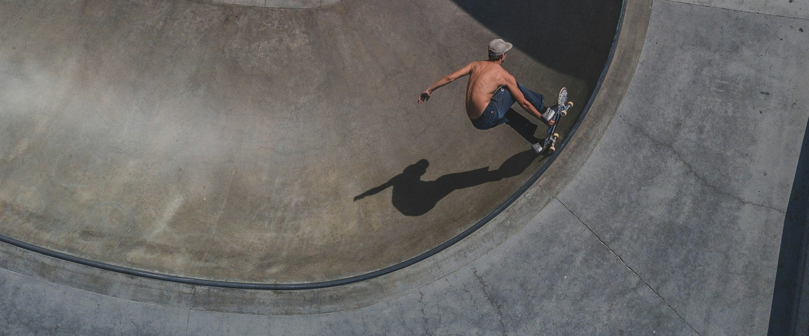
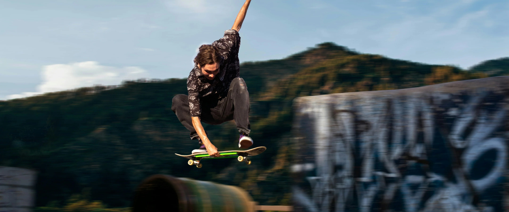
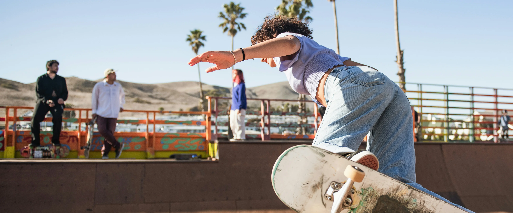

Почитать ещё
Советы 
7 мин
Как избежать травм при катании
Как катать жёстко, но безопасно. Читай, чтобы избежать травм.
Коммьюнити
10 мин
мифы о мире скейтбординга
Развеиваем мифы о скейтбординге. Что правда, а что — фигня?
Теория
5 мин
стили катания: street, park, vert, bowl
Какой стиль скейтбординга выбрать? Разбираемся по полочкам.